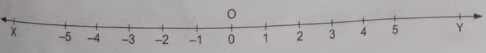

The collection fo natural numbers is denoted by N and is written as N = {1, 2, 3, 4, 5, 6, ...}
REMARKS: (i) The least natural number is 1. (ii) There are infinitely many natural numbers.
All natural numbers together with - from the collection W off all whole numbers, written as W = {0, 1, 2, 3, 4, 5, ...}
REMARKS: (i) The least whole number is 0. (ii) There are infinitely many whole numbers. (iii) Every natural number is a whole number. (iv) All whole numbers are not natural numbers, as 0 is a whole number which is not a natural number.
All natural numbers, 0 and negatives of natural numbers form the collection of integers. It is represented by Z after the German word "zahlen" meaning "to count". Thus, we write, Z = {..., -5, -4, -3, -2, -1, 0, 1, 2, 3, 4, 5,...}
REMARKS: (i) 0 is neither negative nor positive. (ii) There are infinitely many integers. (iii) Every natural number is an integer. (iv) Every whole number is an integer.
A number line is a visual representation of numbers on a graduated straight line.
To represent integers on the number line, draw a line XY which extends endlessly in both the directions, as indicated by the arrowheads in the diagram below.
Take any point O on this line. Let this point represent the integer 0 (zero). Now, taking a fixed length, called unit length, set off equal distances to the right as well as to the left of O.
On the right-hand side of O, the points at distances of 1 unit, 2 units, 3 units, 4 units, 5 units, etc., from O denote respectively the positive integers 1, 2, 3, 4, 5, etc.
Similarly, on the left-hand side of O, the points at distances of 1 unit, 2 units, 3 units, 4 units, 5 units, etc., from O denote respectively the negative integers -1, -2, -3, -4, -5, etc.
Since the line can be extended endlessly on both sides of O, it follows that we can represent each and every integer by some point on this line. For instance, starting from O and moving to its right, after 836 units, we get a point which represents the integer 836.
Similarly, starting from O and moving to its left, a point after 750 units, represents the integer -750. Thus, each and every integer can be represented by some point on the number line.
The numbers of the form p/q, where p and q are integets and q is not equal 0, are known as rational numbers. The collection of rational numbers is denoted by Q and is written as: Q ] {p/q : p,q are integers, q is not equal to 0}
REMARKS: (i) There are infinitely many rational numbers. (ii) There is no least or greatest rational number. (iii) 0 is a rational number, since we can write 0 = 0/1. (iv) Every natural number is a rational number since we can write, 1 = 1/2, 2 = 2/1 3 = 3/1 etc. (v) Every integer is a rational number since an interger a can be written as a/1, e.g. -31 = -31/1, 0 = 0/1 etc. Hence, rational numbers include natural numbers, whole numbers and integers.
Rational numbers do not have a unique representation in the form p/q, where and q are integers and q is not equal to 0.
Thus, 1/2 = 2/4 = 3/6 = 4/8 = ... 15/30 = 16/32 = 144/288 =... .
A rational number p/q is said to be n its simplest form, if p and q are intergers having no common factor other than 1 (that is, p and q are co-primes) and q is not equal to 0.
Thus, the simplest form of each of the rational numbers like 2/4, 3/6, 4/8, 5/10 etc., is 1/2.
METHOD 1: Suppose we are required to find one rational number between two rational numbers x and y such that x < y. Then, 1/2(x + y) is a rational number lying between x and y.
METHOD 2: Suppose we are required to find n rational numbers between two rational numbers, x and y with like denominators.
Then, we convert the given rational numbers into equivalent rational numbers by multiplying the numerator and denominator by a suitable number, usually (n + 1)
Now, the required rational numbers may be manually chosen.
A number which can neither be expressed as a terminating decimal nor as a repeating decimal, is called an irrational number. Thus, nonterminating, nonrepeating decimals are irrational numbers.
Example 1: Write four rational numbers equivalent to 4/7
Solution:
4/7 = 4 x 2 / 7 x 2 = 4 x 3 / 7 x 3 = 4 x 4 / 7 x 4 = 4 x 5 / 7 x 5
= 4/7 = 8/14 = 12/21 = 16/28 = 20/35
Thus, four rational numbers equivalent to 4/7 are 8/14, 12/21, 16/28 and 20/35.
Example 2: Find a rational number lying between (i) 1/3 and 1/2; (ii) 2/3 and -3/4
Solution:
(i) Let x = 1/3 and y = 1/2
Therefore, required rational number lying between x and y
= 1/2(x + y) = 1/2(1/3 + 1/2) = 1/2 x 5/6 = 5/12.
Example 3: Find six rational numbers between 3 and 4.
Solution:
Let n = 6.
We convert 3 and 4 into equivalent rationalnumber using (n + 1) = 7 as multiplying factor.
Thus, 3 = 3/1 = 3 x 7/1 x 7 = 2/7 and 4 = 4 x 7/1 x 7 = 28/7.
Now, 21/7 < 22/7 < 23/7 < 24/7 < 28/7
or 3 < 22/7 < 23/7 < 24/7 < 25/7 < 26/7 < 27/7.
Hence, six rational numbers between 3 and 4 are 22/7, 23/7, 24/7, 25/7, 26/7 and 27/7.
Question 1: Is zero a rational number? Jusitfy.
Question 2: Find three rational numbers between 3/5 and 7/8.
Question 3: Find four rational numbers between 3/7 and 5/7.
Question 4: Find a rational number between:
Question 5: Find six rational numbers between 2 and 3.
Every rational number p/q can be expressed as a decimal. On dividing p by q, two possibilities arise:
(i) The remainder becomes zero and the division concludes after a finite number of steps. In this case, the decimal expansion obtained also terminates or ends.
(ii) The remainder never becomes zero and a repeating string of remainders are obtained. In this case, we get a digit or a block of digits repeating in a decimal expansion.
Thus, we have two types of decimal expressions.
A decimal that ends after a finite number of digits is called a temrinating decimal.
IMPORTANT RULE: A rational number p/q is expressible as a terminating decimal only when prime factors of q are 2 and 5 only.
Examples: Each of the numbers 1/2, 2/4, 7/20, 13/25 is a terminating decimal since the denominator of each of the numbers have no primce factors other than 2 and 5.
A decimal in which a digit or a set of digits is repeated periodically, is called a repeating or a recurring decimal.
In a recrring decimal, we place a bar over the first block of the repeating digits and omit the other repeating blocks.
(i) Every rational number is expressibile either as a terminating decimal or as a nonterminating reccuring decimal.
(ii) A number whose decimal expansion is terminating or nonterminating
Example 1: Without actual division, find which of the following rational numbers are terminating decimals: (i) 5/32 and (ii) 11/24.
Solution:
(i) Denominator of 5/32 is 32.
And, 32 = 2⁵. Therefore, 32 has no prime factors other than 2.
So, 5/32 is a terminating decimal.
(ii) Denominator of 11/24 is 24.
And, 24 = 2² x 3.
Thus, 24 has a prime factor of 3, which is other than 3 and 5. Therefore, 11/24 is not a terminating decimal.
Example 2: Express 0.3bar in the form of p/q, where p and q are integers and q is not equal to 0.
Question 1: Write each of the following in decimal form and say what kind of decimal expansion each has.
Question 2: Without actual division, find which of the following rational numbers are terminating decimals.